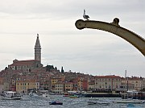
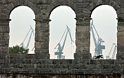
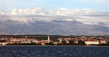
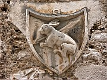

Disclaimer: These pages are not actively maintained, and some of the practical information on the site is out of date. I am working on a new version of the site that will focus more on my photos and memories of travel in Southeast Europe, and less on practical details that too easily become obsolete. In the meantime, please treat the information here with caution.
Six Adriatic Towns
Croatia's Adriatic coast would be worth visiting just for its natural beauty, and meandering slowly around its islands and beaches makes for a great holiday. The appeal of such a journey is enhanced by a series of towns and cities that display a variety of cultural and architectural influences. This page is a brief introduction to six of these towns, from north to south: Rovinj, Pula, Zadar, Trogir, Split, and Hvar.
Rovinj from St Euphemia

Seagull, Rovinj Harbour
Rovinj
From a distance the hilly old town of Rovinj is one of the most picturesque sights in Croatia, its colourful waterfront mansions complemented by the warm stone and red roofs of the densely packed upper town. Fortunately it doesn't disappoint when you get closer - it's a joy to stroll around the warren of narrow streets picking out little architectural details, or trying to find all 30 churches that have somehow been squeezed into this small area. The Italian influence is perhaps more obvious here than anywhere in Croatia, and all signs in the town are in Italian as well as Croatian.
At the top of the hill is the Church of St Euphemia. To my eye it's a bit too large for its surroundings - I can't look at the old town from outside without feeling it is about to be squashed by the weight of the church. But it's worth visiting, especially if you climb the wooden staircase to the top of the 60m campanile. The views of the old town are amazing - count the chimneys to see how many separate family units are contained in each building. Check your tally by counting the satellite dishes.
If you want to swim, stretch your legs, or admire the view of the old town from a different angle, take a short walk south to the Punta Corrente Forest Park.
Practicalities
About 12 buses a day make the 45 minute trip from Pula. There are also buses to Poreč (1 hour), which is a major resort but is also known for the Byzantine Euphrasian Basilica.
Temple of Augustus, Pula

Amphitheatre and harbour cranes
Pula
Pula's main attraction is its collection of Roman architecture. You can't miss the Amphitheatre, thanks to its well-preserved and very impressive walls. Concerts are held here in the summer months, although crowds don't come near the 20,000 that packed in here in Roman times. The only remaining building on the Forum is the classically proportioned Temple of Augustus. At the other end of pedestrianised Sergijevaca is the Arch of Sergius, elaborately decorated on the outer side.
Pula's other sights are fairly minor. The town is an important port and naval base, and one of its most attractive aspects is the feeling that even if all the tourists disappeared life would still go on, and the locals would still linger at the many terrace cafes in the centre of town. Look out for the statue of James Joyce outside one of those cafes. He spent the winter of 1904/5 in Pula, teaching English and complaining about the cold.
Practicalities
Although train timetables from Zagreb show departures to Pula, there is no direct rail line. The "train" to Zagreb is actually two trains with a bus transfer in the middle. (If the rail network in this part of the world appears somewhat illogical, remember that it was built to serve the needs of the Austro-Hungarian Empire, when it was more important to be able to get to Vienna than to Zagreb). Buses to Zagreb are much quicker. Fairly frequent buses go to Rovinj and other towns in Istria, and to Rijeka from where you can catch a bus or ferry heading south along the coast.
Evening sky, Zadar

Zadar and the Velebit Range
Zadar
Zadar is not one of Croatia' most glamorous coastal towns, and for most people it's probably not worth making a special effort to visit. But if your exploration of the coast will take you through the area, Zadar's compact old town, surrounded by walls and water on three sides, is worth a look. As in Dubrovnik the streets are laid out in a grid pattern, but Zadar's street plan is much older, dating from Roman times. Also like Dubrovnik, it's particularly enjoyable in the evening when the locals stroll through the traffic-free streets paved with polished flagstones. Zadar's history is complex and troubled even by Balkan standards. As late as the Second World War it was an Italian possession and known as Zara. The pristine appearance of many old buildings is a tribute to careful reconstruction, especially after heavy Allied bombing in 1943.
There are several notable churches in the centre of Zadar. St Donat's is an unusual tall circular building that incorporates sundry bits and pieces of ancient Roman art and architecture into its 9th century structure. Also worth a look are the Romanesque Cathedral of St Anastasia and the Franciscan Monastery.
Practicalities
Zadar is easy to get to from just about anywhere in Croatia, with frequent buses heading north and south along the coast and inland to Zagreb. You can get to the nearby islands by regular ferries and on excursion boats. The latter are well worth considering if you want to see the Kornati Islands, or the lovely Telaščića Bay on Dugi Otok. The Rijeka-Dubrovnik coastal ferry stops here, but at a rather inconvenient time of night.
Zadar has surprisingly little central accommodation - you are quite likely to end up staying in Borik, 3km away.
Trogir
Trogir
The little town of Trogir boasts one of Croatia's most attractive ensembles of mediaeval architecture, and its value has been recognised with UNESCO World Heritage status. It sits on a small island connected by a bridge to the mainland. There are no cars in the old town - in fact it would be hard to fit a car in most of the narrow streets. Just south of the bridge is the main square, surrounded by some very impressive architecture. The most striking building is the Cathedral of St Lovro, especially the portal. This complex work, carved by a local man called Radovan in 1240, features Adam and Eve, two lions of Venice, and many other scenes. It won't take you long to explore the other streets on the island; you'll soon end up enjoying a stroll along the picturesque waterfront (Riva). At the western end of Riva is the large and rather poorly preserved Kamerlengo Fortress.
Practicalities
Trogir is on the main coastal road from Zadar to Split so it is easily reached on buses between those two cities. There are also frequent (slower and cheaper) local bus services from Split. This means that it is quite possible to stay in Split and visit Trogir as a day trip, or vice versa. You can also take a local bus to the Roman ruins at Solin (Salona). You would probably need to book ahead to be sure of finding a place to stay in the old town, simply because it's so small.
Riva, Split
Split
You are bound to pass through Croatia's second largest city as you travel around the country, and many tourists do just that: pass through without stopping. Perhaps they are put off by the city's industrialised surroundings, or enticed away by the range of destinations within easy reach. But it's a pity to skip Split completely. It's a unique city where daily life goes on within the walls of a Roman palace. Outside those walls the modern town's architecture may be less impressive, but it's a lively place with a good choice of pavement cafes where you can watch the world go by. Split is also a good base for day trips by land and sea.
The heart of the city is Diocletian's Palace, and the heart of the palace is the Peristyle, a colonnaded square that formed the entrance to the Emperor's quarters. Diocletian's octagonal mausoleum was converted to a cathedral - make sure to climb its relatively modern campanile for great views of the palace. The palace was built with stone from Brač, and enhanced with expensive materials imported from various parts of the empire. From the Peristyle, streets lead west, north, and east, passing through the city walls at the Iron, Golden, and Silver Gates. To the south, stairs lead down into huge semi-underground chambers that give some idea of the scale of the palace's foundations. You emerge through the Brass Gate onto the Riva, where the numerous bars and cafes provide vantage points to watch the to-ing and fro-ing in the harbour, as ferries of all shapes and sizes head for points near and far.
To the west of the city is the Marjan Peninsula, a good place to walk through the woods, swim, or enjoy views of the city. Also in this area is the Meštrović Gallery, which houses a large collection of work by Croatia's most famous sculptor.

Hvar Town
Practicalities
Split is a key transport hub for anyone exploring the Croatian coast - you may well find yourself passing through several times. The port, train station, and bus station are all conveniently located in the same area, and there is a left-luggage office if you want to have a quick look at Split before heading on. If you want to get to Zagreb you can choose between bus and train; for most other destinations the choice is between bus and ferry. Dozens of ferries leave daily for the islands of the central Dalmatian coast, and the Rijeka-Dubrovnik ferry docks here. International travel is also straightforward, whether by ferry to Italy or by bus to Bosnia.
No matter when you arrive in Split, you are unlikely to end up without a roof over your head - there are always room owners on the prowl for anyone who looks like they need a place to stay. I get the impression that the quality of private rooms here is more unpredictable than in other Croatian towns, so make sure you are happy with the room and its location. The Tourist Bureau on the Riva, very near the port area, can also arrange rooms.
Hvar Town
Hvar Town is on the sheltered southern shore of lavender-scented Hvar Island. Right on the harbour is Trg Sveti Stjepana, one of the most impressive squares in Croatia, dominated by the belfry of the Cathedral. Also on the square is the Arsenal, which houses a theatre. To the north, narrow lanes lead uphill past beautifully decorated Renaissance mansions, such as the roofless gothic Hektorovič Palace. This part of the town is encircled by walls, and guarded from above by the Španjol fortress, from which you can look down over the red roofs and palm trees of the town.
Hvar is famous for its benign climate. Bad weather does happen though - I guess I was just unlucky...
Practicalities
Most ferries to Hvar Island (including the Rijeka-Dubrovnik coastal ferry) arrive at Stari Grad, which has bus connections to Hvar Town. You may also be able to get directly to Hvar Town on a passenger ferry from Split, but check the timetable in advance. Taxi-boats run from Hvar Town to the Pakleni Islands just offshore, where the best beaches are located.
What they said about Split and Trogir...
Trogir is one of those golden-brown cities: the colour of rich crumbling shortbread, of butterscotch, of the best pastry, sometimes of good undarkened gravy. It stands naked and leggy, for it is a walled city deprived of its walls. Now it looks like a plant grown in a flower-pot when the pot is broken but the earth and roots still hang together.
- Rebecca West, Black Lamb and Grey Falcon, 1941
As for the Split personality, Spličani are a vivacious and even, on occasion, turbulent people. They also have a reputation for a particularly caustic humour and both the men and the girls are unusually good-looking. If you take part in the korso or just sit and gaze you begin to get an idea of them all.
- J.A. Cuddon, The Companion Guide to Yugoslavia, 1968
Sometimes I stopped off for a night or two in Split, whose inhabitants seemed to me to be handsomest people in all Europe.
- Jan Morris, Fifty Years of Europe, 1997
More photos of Croatia's coastal towns in my Croatia Galleries